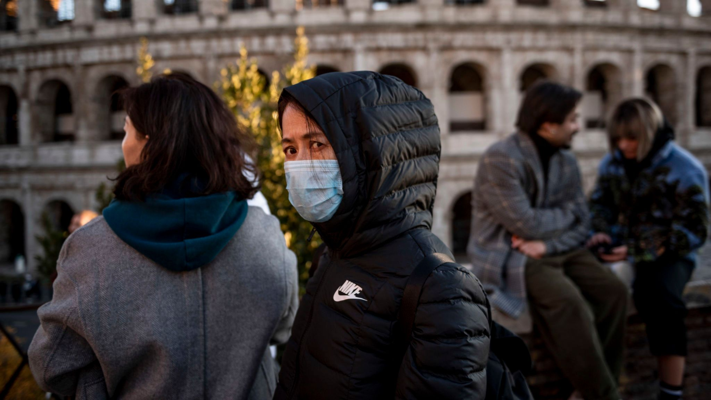

My Status Feed
Goats Have Weird Eyes
April 5, 2020
 My family, justifiably wanting self-sufficiency in the midst of the apocalypse,
decided to get goats. Since their purchase, I have come to an overpoweringly definite conclusion:
My family, justifiably wanting self-sufficiency in the midst of the apocalypse,
decided to get goats. Since their purchase, I have come to an overpoweringly definite conclusion:
Goats have weird eyes.
Seriously, look at them. They look like aliens with those eyes. Maybe they are aliens. Who knows.
Living Imperfectly Perfect's Self-Sufficiency Experiment
March 20, 2020
The COVID-19 outbreak has inspired my mom: she wants to readopt the semi-agrarian lifestyle that our family had when we homeschooled (I was homeschooled, you see). She's going to be blogging about this process. Check out her announcement.
On Taking Coronavirus Seriously
March 14, 2020

Photo from Sky News.
I have noticed lately that many people I know are not taking the COVID-19 outbreak seriously.
They say, "Oh, it's just the flu! The media's hyping everything up to make it worse than it is!"
I've even seen a few people allege that the coronavirus crisis is really a conspiracy to make Trump
look bad or to allow the government to control our lives.
Here's the thing: it's not a conspiracy. It's not overblown. Although I strongly dislike alarmist rhetoric,
we are experiencing a genuine health crisis.
My lab at Virginia Tech has been following this outbreak with great interest since January.
At that time, it was primarily just a problem in China--most people figured that it couldn't come here.
It worried us, however, before it worried anyone else. One of our members is Chinese.
He hadn't been back to China in a couple of years, but he (and the rest of us) was worried for his country.
We had reason to be concerned, for we followed the horrifying details.
We discovered how one of the doctors who first discovered the virus (and was initially persecuted for reporting
it) died of it. We saw how Chinese hospitals became so flooded with patients that China had to construct new medical
centers with unwise haste. We discussed how the virus has just the right parameters to be very dangerous--
it has a long incubation period and doesn't kill everyone, which helps it spread; however, it does kill more people than your average flu.
Trust me, the coronavirus was a catastrophe even before everyone started worrying about it here.
Then, we noticed how COVID-19 started leaving China. We read about how a cruise ship, the Diamond Princess,
became a viral death trap and about how people in Iran and Italy began to contract the disease and to die at alarming
rates. We realized that the disease was coming.
Now it's here. We knew that the epidemic would become politicized.
We suspected that the United States needed to close its borders to countries with the virus--
but the measures that were taken were too little too late.
If you are so inclined, *please* don't dismiss this warning. I took a position on this issue before it became partisan.
I'm not an expert in this field, but all of the people who are--renowned epidemiologists and national and international
disease control organizations--are saying that the pandemic is a big deal. I've heard some estimate that a majority of
the world population might end up infected with the virus.
In addition, just about every single Italian or Chinese person who has posted anything about the coronavirus online
has said it's been catastrophic. They say hospitals are overwhelmed to the point that ICU's are caring for people
in the hallways. Several people have had relatives die.
By the way, some people say that the coronavirus epidemic is just like the flu. This claim is misleading.
The flu kills a lot of people, but that's only because it infects a lot of people. This coronavirus can also
infect tons of people, but its mortality rate is much higher. In China, the COVID-19 mortality rate was about
ten times as great as the flu mortality rate, according to
this source.
All age groups are more likely to die of coronavirus than the flu. The COVID-19 mortality rate among older
populations is very high. 15% of coronavirus patients older than 80 and 8% of patients in their 70s have died,
whereas less than 1% of people over age 65 who get the flu die. A younger person is also more likely to die of
COVID-19 than the flu, even if that chance is still very small.
So, take this epidemic seriously. Comply with quarantines and expert recommendations.
Wash your hands often and practice social distancing. Avoid large crowds.
If you're in charge of events where people gather, consider canceling or moving the event online.
Don't panic--most of us, particularly the young, will be fine--but don't minimize it either.
Even if you're not likely to die, infecting your grandparent or parent might kill him or her.
Thanks for reading this long post. I know I'm not an authority on disease control, but,
as someone who has followed this epidemic for a while, I felt like I had to say something. Stay safe.
By the way, if you want to track the spread of coronavirus, these websites are very helpful:
www.worldometers.info/coronavirus/
coronavirus.1point3acres.com/en
infection2020.com
Coronavirus Tracking
March 12, 2020
Another member of my lab, Albert Jarvis, found this useful website. It aggregates real-time data about the current COVID-19 outbreak.
The Inanimate Members of the Ross Dynamics Lab
February 1, 2020

The Ross Dynamics Lab is not entirely comprised of human researchers. May I present to you,
from right to left:
- The Gangster Penguin, whose name is makes him largely self-explanatory,
- Sir Wolfram (the snake), who is good at a new kind of science,
- Ombudsbrother, who is always watching you,
- and a picture of Ombudsbrother's brother John, which, I must note, is not John himself. It is just a picture.
深深爱你 (Deeply Loving You)
January 8, 2020
This is really good! There's an English version, but I like this one more.
I want to know more Chinese worship songs... do you know any?
这个很好！有这个英语的崇拜之歌。我更喜欢中文的这个。我想认识中文的崇拜之歌。你认识任何？
EDIT (Feb. 2, 2020): I apologize because I just realized how terrible the above Chinese is.
Hopefully I'm getting a bit better...
Hello, world
January 1, 2020
I've decided to try an experiment. I'm going to start putting the stuff that I normally put on Facebook
here.
Why?
Well, I want to reclaim a little piece of the internet;
I want to reduce my dependence on all-encompassing tech platforms.
I'm
not
alone.
In fact, in an increasingly polarized political climate, both
conservative
and
liberal
voices agree that the current balance of power on the web needs to be corrected.
The internet was constructed as a
decentralized, democratic entity. Its founders took steps to avoid giving
control over information to any one organization; they instead offered the common person--albeit the common
person who possessed certain technical knowledge--the ability to make himself heard.
However, over the past decade,
we have effectively surrendered our right to this gift. Large companies like
Facebook, Google, Apple, and Amazon
(the Big Four)
offered us convenience. Their platforms are easy and engaging to use; in fact, they are
made intentionally addicting. These companies, particularly Google, have products that do
so many different things
that it is almost impossible to avoid using their ecosystems. We have now abandoned almost everything else.
In 2013, requests to Google services comprised 25% of
North American internet traffic;
in 2018, Amazon conducted nearly one-half of all American online e-commerce sales.
These platforms thrive on user data. They collect
prodigious
amounts of personal information and then
mine it to improve
their products. A cycle ensues: Google, for example, has products are better than those of the competitition
because Google feeds users' personal data into its algorithms.
Users therefore prefer Google products and feed
Google even more data.
These companies should not be trusted with the user data that they collect. Facebook's carelessness with
user information led to the
Cambridge Analytica
scandal, in which a political consulting organization disingenuously gained access to raw data from 87 million
accounts. Jigsaw, a think tank owned by Google's parent company Alphabet,
interferes
in Middle Eastern geopolitics
in ways that sometimes indirectly utilize user information. Google once agreed
to give the NSA network traffic metrics
in exchange for information regarding foreign hackers.
These companies' platforms have other issues: they create
ideological echo chambers
and often operate according to
opaque
censorship rules which are
often
accused
of
bias.
I think we need to start from scratch. On this website, I have more control over my own data.
Sure, it's hosted by GitHub Pages, which is owned by Microsoft--
but at least it lacks an opaque algorithm that feeds us what it wants us to consume.
I'd ideally have my own server
or use some sort of blockchain-based hosting scheme, but I feel like this little Status section of my
website--which I'll use for microblogging as on Facebook or Twitter--is a step in the right direction.